01
Problem
메뉴가 나열되어
업무 진입이 어려움
Decision
사용자 역할별
오늘의 업무를 우선 노출
Outcome
대시보드 중심
진입구조
복잡한 업무 시스템을
사용자의 흐름에 맞게 재구성하다
N-SRM은 삼성전자의 차세대 통합 구매관리 시스템으로, 기존 G-SRM을 대체하여 글로벌 협력사 관리, 구매 프로세스 운영, 리스크 모니터링을 하나의 플랫폼에서 수행하는 사내 바이어 전용 포털입니다. DX(디바이스)와 DS(반도체) 부문으로 분리 운영되며, MFA 인증과 대용량 데이터 처리를 강화했습니다.
Lead Product Designer로서 정보 구조 재설계, UI 시스템 구축, 디자인 의사결정 전반을 주도했습니다.
본 케이스는 사내 바이어(구매 담당자) 시점에 집중하며, 한 페르소나의 동선을 끝까지 따라가는 의사결정의 일관성에 초점을 두었습니다.
Samsung Electronics / 글로벌 제조 전자
기존 G-SRM은 메뉴 나열식 구조로, 로그인 후 오늘 처리할 업무를 파악하려면 여러 화면을 직접 찾아다녀야 했습니다. 히어로 배너가 viewport 30%를 차지하고, 필터는 13개가 평면 나열되어 있어 인지 부하가 컸으며, 컬러는 장식용으로만 사용되어 긴급도나 상태를 시각적으로 구분할 수 없었습니다.
Period | 2024.08 – 2025.08
Role | Lead Product Designer
Platform | Web Portal
Scope | IA · UX Strategy · UI Design · Design System
Team | PM 1 · Designer 2 · FE 3 · BE 200~
기존 시스템의 구조적 문제를 분석하고, 각 문제에 대한 설계 판단과 개선 방향을 정리했습니다.
Problem
메뉴가 나열되어
업무 진입이 어려움
Decision
사용자 역할별
오늘의 업무를 우선 노출
Outcome
대시보드 중심
진입구조
Problem
필터가 많아
탐색 부담 증가
Decision
1차 필터와
상세 필터를 분리
Outcome
점진적
필터 탐색
Problem
상태 구분이
컬러에만 의존
Decision
라벨, 수치,
우선순위를 병행
Outcome
인지 부담
감소
Problem
협력사 정보가
테이블에 밀집
Decision
요약 카드와
상세 정보를 분리
Outcome
빠른 판단
지원
*실제 운영 데이터와 내부 정책 정보는 보안상 비식별 처리했으며, 포트폴리오에서는 정보 구조, 업무 흐름, 컴포넌트 설계 방식 중심으로 재구성했습니다.
명확한 동선, 즉각적인 인지, 효율적인 운영
복잡한 메뉴 구조를 사용자의 하루 업무 흐름에 맞게 재구성하고, 정보 위계를 정리해 로그인 즉시 오늘의 업무를 파악할 수 있도록 했습니다.
시맨틱 컬러 시스템을 도입하고, 13개 필터를 3단 위계로 분리하며, 데이터 중심의 카드 UI로 전환했습니다.
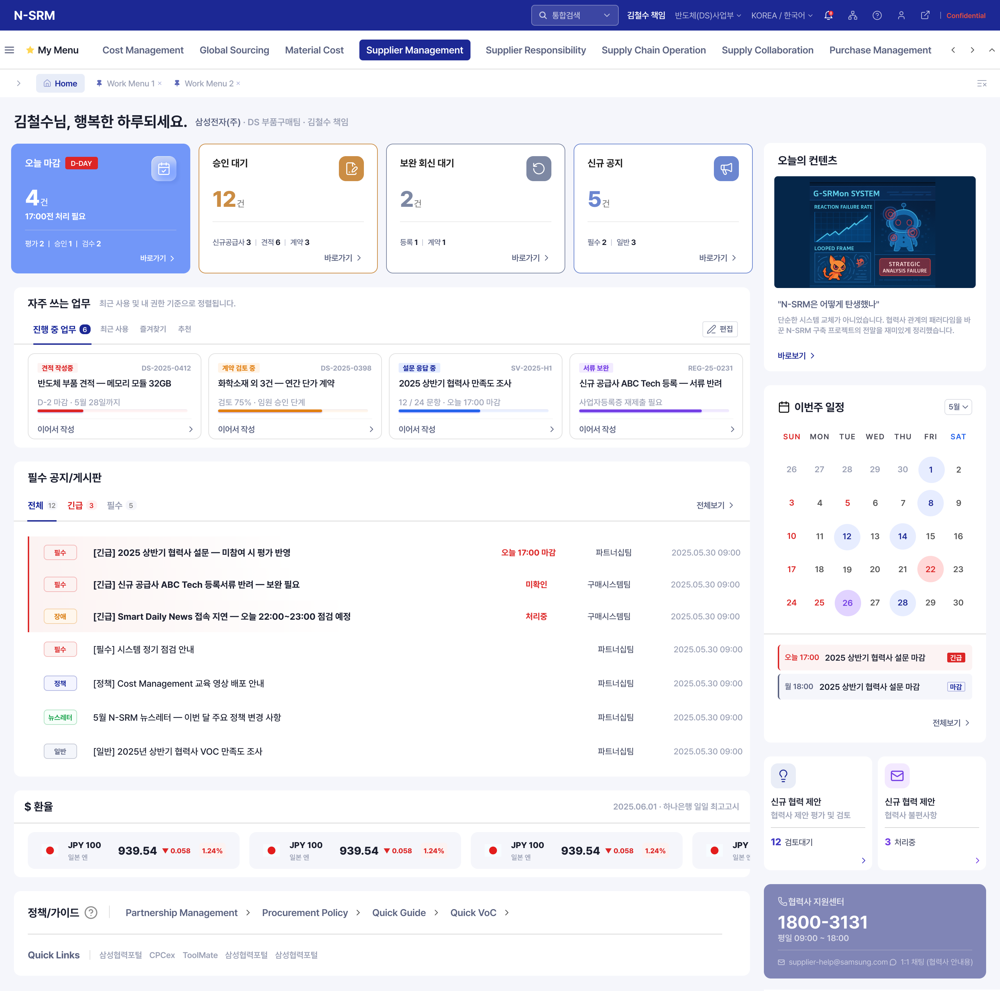
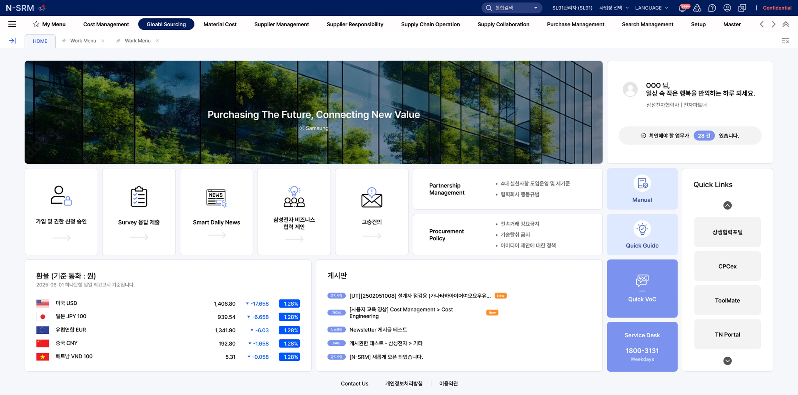
매일 스스로 찾아야 하는 업무
"로그인하면 히어로 이미지가 나오고 그 다음은?"
"오늘 마감인 건이 있는지 어떻게 알지?"
"내 담당 협력사만 보려면 필터를 다 열어야 하나?"
"뉴스레터가 어디 있는지 매번 찾아야 해"
"이번 주 일정을 한눈에 볼 수 없음"
"메뉴는 있는데 지금 뭘 해야 하는지 모름"
오늘 해야 할 업무가 시간순 운선순위로 자동 정렬됩니다.
4건
3건
12건
오늘은 승인 요청 28건을 먼저 처리하세요.
위험 협력사 3곳은 오전 중 점검이 필요합니다.
정책·시장 뉴스는 승인 처리 후 확인하면 됩니다.
첫 화면의 카드 하나하나가 업무 깊이까지 연결되는 구조입니다.
B2B 시스템 전환의 가장 큰 리스크는 사용자 저항이다. 오픈 공지만으로는 부족하다고 판단해, 커뮤니케이션 전략을 직접 기획·주도했다.
화면 설계에서 끝나지 않고, 사용자가 새 시스템을 받아들이는 경험 자체를 설계했다.
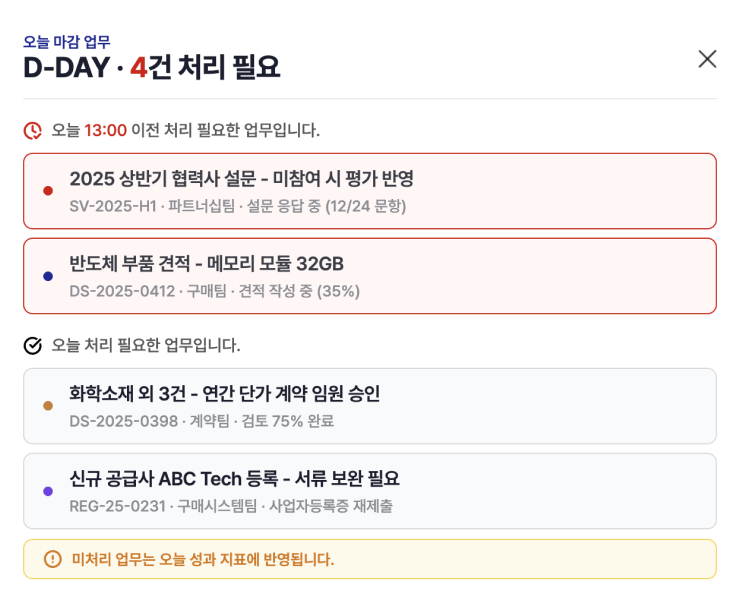
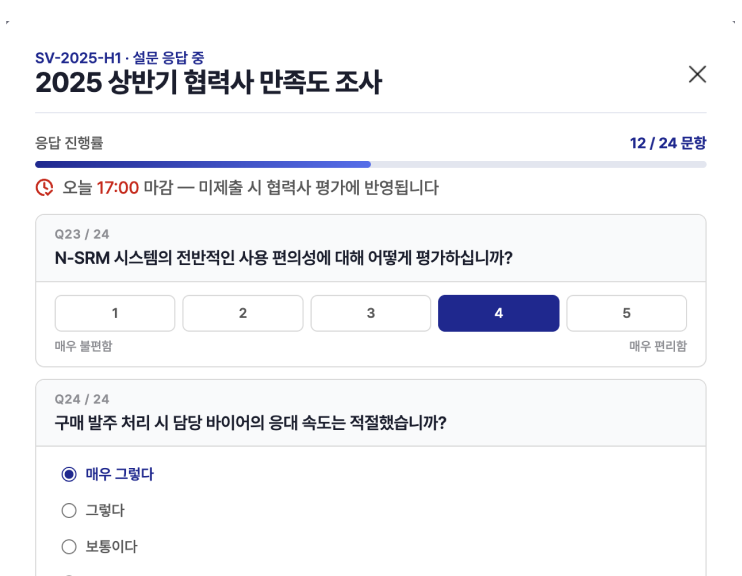
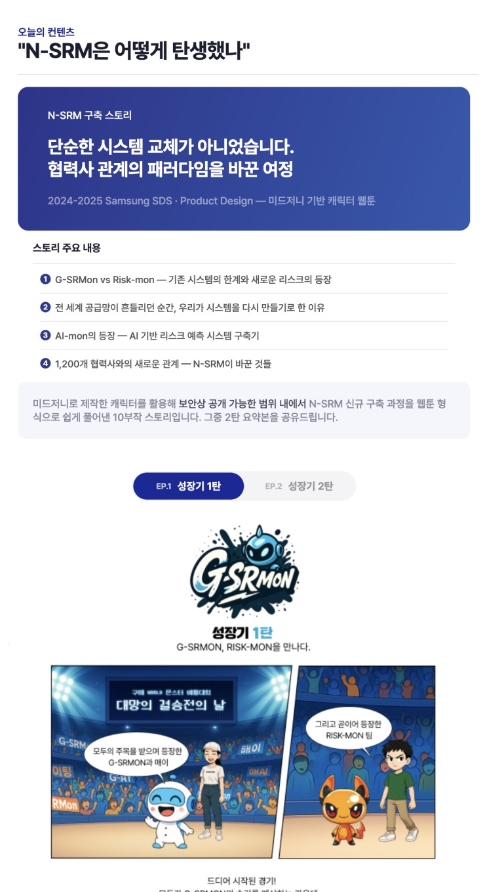
281개 협력사를 빠르게 탐색하고,
핵심 정보를 한눈에 파악하며, 즉시 수정할 수 있는
3단계 태스크 플로우
수백 개 협력사 중 원하는 대상을 빠르게 찾고, 핵심 현황을 즉시 파악하며, 바로 수정할 수 있는 흐름을 설계했습니다.
검색 필터의 점진적 노출, 상단 요약 카드, 인라인 입력 가이드로 각 단계의 효율을 높였습니다.
깊은 네이비와 블루를 중심으로 한 시각 체계는 방대한 구매 업무 속에서 사용자의 집중을 돕고, 정보의 위계를 명확히 전달하며,
신뢰감 있는 엔터프라이즈 환경을 구현합니다. 2,400개 협력사를 다루는 복잡한 시스템 전반에 걸쳐 일관되고 확장 가능한 디자인 언어를 적용했습니다.
Navy
#19289A
--navy · Primary
Navy Deep
#0f1a6e
deep · Hover
Blue Soft
#e8edf8
--blue-soft
Text 1
#1a1e2e
--t1
복잡한 협력사 관리 업무를 직관적인 하나의 화면에서.
N-SRM은 승인 처리, 협력사 점검, 정보 수정 등 구매 담당자의 일상 업무를 자연스러운 흐름으로 재설계한 플랫폼입니다.
※ 보안상 실제 데이터와 내부 정책 정보는 제외하고, 주요 화면 구조와 업무 흐름만 샘플로 재구성했습니다.
전체화면으로 보기B2B 시스템 전환에서 가장 큰 리스크는 사용자 저항입니다.
단계별 뉴스레터를 직접 기획·디자인해, 오픈 전 기능 미리보기 → 전환 일정 안내 → Risk 대응 체계 공유 순서로 점진적 적응을 유도했습니다.
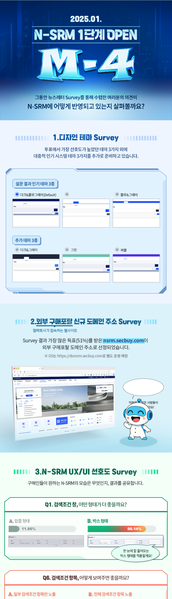
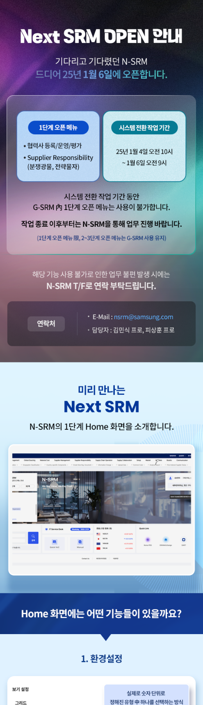
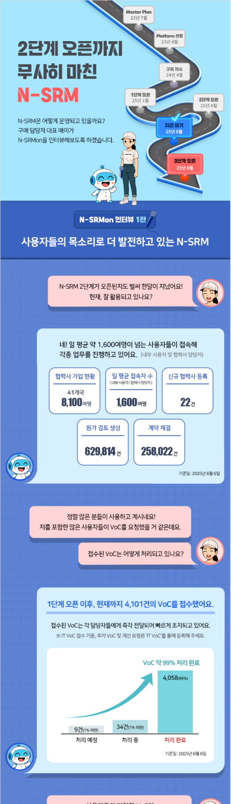
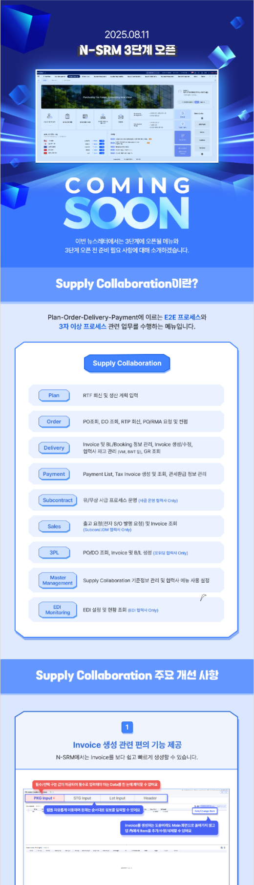
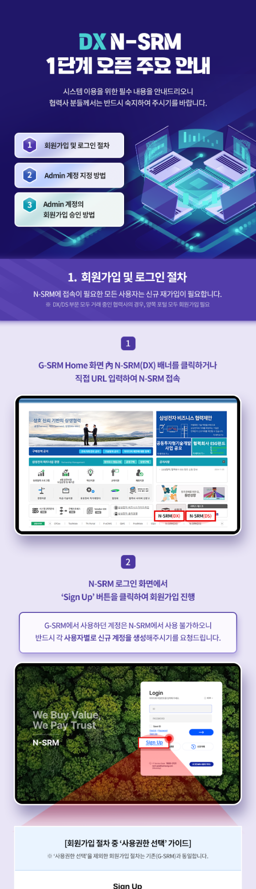
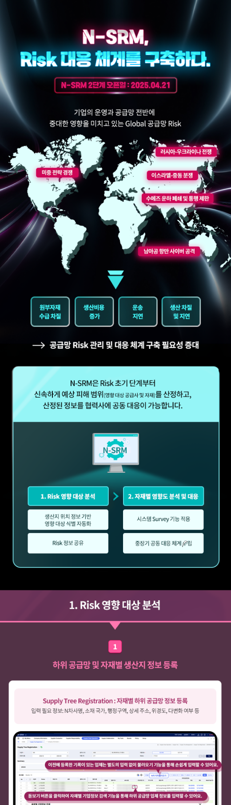
보안상 절대 수치는 공개하지 않으며, 내부 검증 기준의 상대적 개선폭만 표기했습니다.
약 40%
업무 파악 시간 단축
사용자 테스트 기준 · 로그인 후 오늘 할 일 확인까지의 평균 소요 시간
최대 60%
필터 조작 횟수 감소
13개 평면 필터 → 3단 위계 전환 후 주요 검색 시나리오 기준
2.5×
마감 응답률 향상
D-Day 카드 + 자동 알림 도입 후 설문/평가 마감 준수율 비교
3단계
협력사 관리 완결
탐색 → 상세 → 수정까지 3클릭 내 완료되는 태스크 플로우